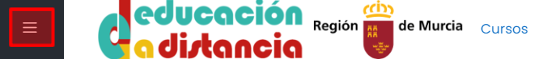
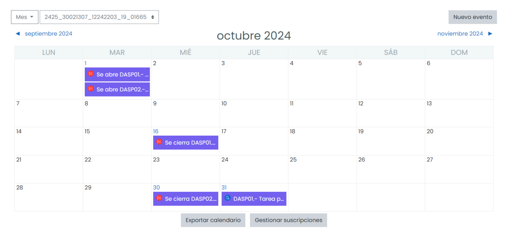

En la parte de la izquierda encontrarás la Zona de Navegación, que te permite acceder a tu área personal y a los módulos en que estás matriculado entre otras opciones. Este menú es colapsable haciendo click en el siguiente cuadro:

Desde la Zona de Navegación y dentro de un módulo profesional podrás acceder a la sección de Participantes y Calificaciones. En todo momento podrás acceder a tu Área Personal, Calendario y el Punto de Encuentro del Alumnado.
Participantes
En esta sección encontrarás a todos tus compañeros y al profesor o profesora del módulo, lo reconocerás por el rol "Profesor_Ciclos".
Ejemplo de pestaña participantes. Haz click para ampliar(CC BY-SA)
Desde la pestaña participantes puedes enviar un mensaje privado a tu profesor haciendo click en su nombre y posteriormente en "enviar mensaje" en la ventana emergente.
Enviar mensaje privado a un profesor o profesora(CC BY-SA)
También puedes enviar un correo electrónico local a tu profesor o profesora. Con esta opción, a diferencia del mensaje privado, podrás adjuntar imágenes y archivos.
Calificaciones
Desde aquí podrás consultar las calificaciones que recibas durante el curso. Ten en cuenta que es posible que algunas de ellas y los comentarios de retroalimentación permanezcan ocultos hasta que el profesor o profesora decida publicarlas.
Ejemplo de calificaciones de un curso de EaD. Haz click para ampliar(CC BY-SA)
Área personal
En tu Área personal podrás acceder al último curso que hayas visitado y navegar entre los diferentes módulos en los que estás matriculado. Desde aquí puedes organizar los cursos por nombre y mostrarlos en forma de tarjeta, lista y resumen.
Área personal de EaD. Haz click para ampliar(CC BY-SA)
Calendario
El calendario muestra los próximos eventos como apertura y cierre de tareas y cuestionarios, sesiones de prácticas o fechas de examen. Puedes escoger los eventos de un módulo en concreto o mostrar los eventos de todos los módulos.
Ejemplo de calendario. Haz click para ampliar(CC BY-SA)
Punto de encuentro alumnado
En el punto de encuentro del alumnado encontrarás el foro de cafetería (foro general para pasar un rato agradable con los compañeros debatiendo, hablando compartiendo cosas del día a día), documentos de oficina como formularios de convalidación, renuncia de matrícula, solicitud de títulos, etc. Haciendo click en la pestaña correspondiente a tu ciclo formativo podrás consultar la planificación y calendario de tutorías y de exámenes.
Punto de encuentro de alumnado. Haz click para ampliar(CC BY-SA)
{kind=link}
{kind=link}
{kind=link}
{kind=link}
{kind=link}